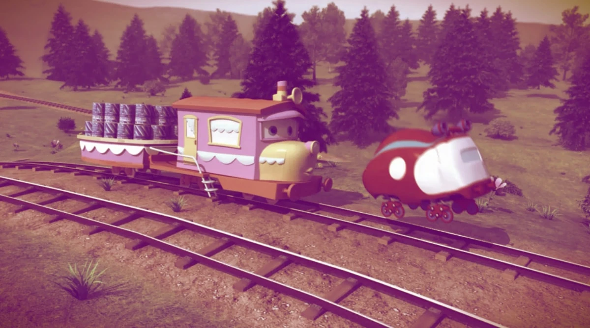

TV Series “Tishka Trains”

A 3D cartoon TV series produced in 2014. I worked across modelling, rigging, and rendering, with the final grade and compositing done in After Effects.

A 3D cartoon TV series produced in 2014. I worked across modelling, rigging, and rendering, with the final grade and compositing done in After Effects.